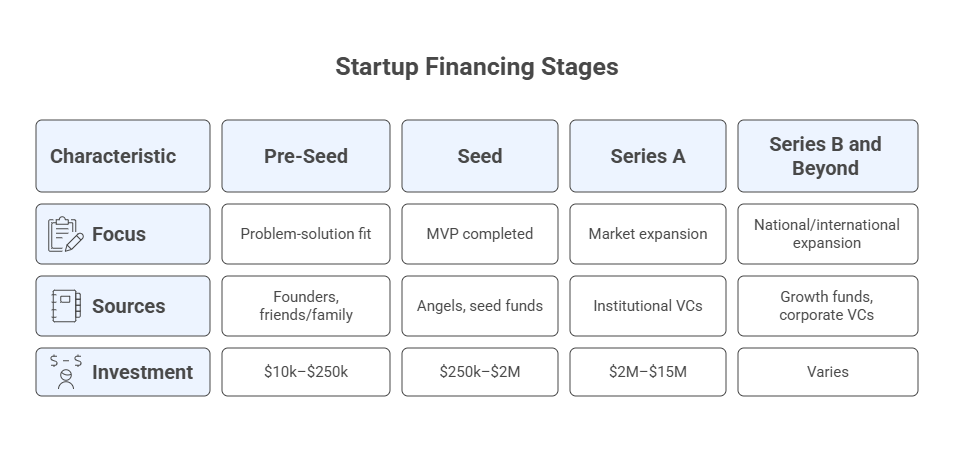
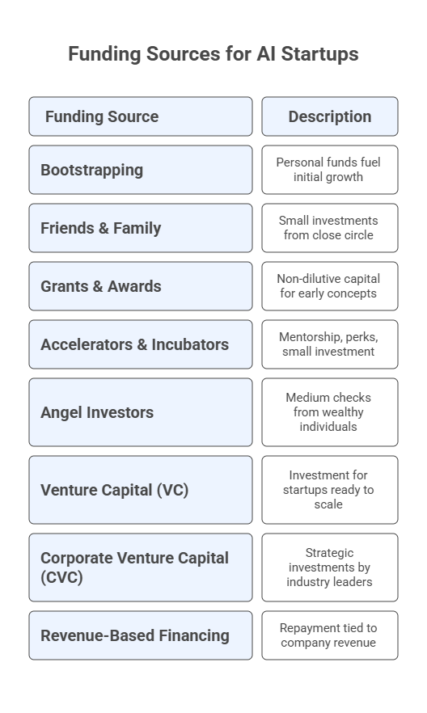

Topic 9: Funding & Investment Readiness#
This module introduces the fundamentals of startup funding and investment readiness, guiding you through the stages of financing, the types of investors you may encounter, and the criteria they use to evaluate early-stage ventures. You will learn how capital flows into startups, what investors expect at each stage, how to interpret key financial concepts such as valuation, dilution, and unit economics, and how to assess whether your own startup is prepared to raise external funding. By the end of the module, you will understand both the strategic role of funding in accelerating growth and the practical steps required to become an investable AI-powered startup.
9.1 Why Funding Matters#
Building an AI-based startup involves navigating dynamic markets, managing technical complexity, and achieving rapid experimentation (validated through the Build–Measure–Learn loop from Lean Startup). Funding becomes essential to:
Accelerate product development
Acquire early adopters and customers
Support AI infrastructure (compute, data, monitoring)
Hire key talent
Scale operations, sales, and partnerships
Tip: Funding is not the goal—validated learning and traction are. Funding accelerates what already works; it cannot fix what does not.
AI-based startups have unique characteristics that influence funding needs:
Higher early-stage infrastructure costs
IP-driven defensibility
Strong investor interest in AI trends
Increased scrutiny around data, ethics, and compliance
9.2 Startup Financing Stages#
Funding is typically raised in sequential stages, each aligned with a specific maturity level.
Pre-Seed (Ideation & Validation)#
Focus: Problem-solution fit, prototype, customer discovery.
Sources: founders, friends/family, small grants, pitch competitions.
Typical investment: \(10k–\)250k.
Seed (Early Traction & MVP)#
Focus: MVP completed, early adopters, initial revenue.
Sources: angels, seed funds, accelerators.
Investment: \(250k–\)2M.
Series A (Growth & Repeatable Revenue)#
Focus: Market expansion, operational scaling, predictable KPIs.
Sources: institutional VCs.
Investment: \(2M–\)15M.
Series B and Beyond (Scale-Up)#
Focus: national/international expansion, product lines, partnerships.
Sources: growth funds, corporate VCs.
Investment: $15M+.
Non-Dilutive Funding (All Stages)#
Grants (NSF I-Corps, SBIR (Small Business Innovation Research), STTR (Small Business Technology Transfer))
Competitions (university, industry)
Revenue-based financing
Corporate innovation grants

9.3 Funding Sources for AI-Based Startups#
A diversified set of mechanisms exists for financing your startup. Each has distinct advantages and trade-offs.
A. Bootstrapping#
Using personal savings, consulting revenue, or early customers to fund development.
Pros: control, independence, higher efficiency.
Cons: slower growth, limited runway.
B. Friends & Family#
Early supporters who invest small amounts.
Best Practices:
Transparent expectations
Simple written agreements
C. Grants & Awards#
Non-dilutive capital ideal for early-stage concepts.
Examples:
University entrepreneurship grants
State innovation programs
NSF I-Corps
SBIR Phase I
D. Accelerators & Incubators#
Provide mentorship, office hours, perks, and a small investment in some cases.
What’s the Difference?
Aspect |
Accelerators |
Incubators |
|---|---|---|
Primary Goal |
Rapid growth & scaling |
Early-stage idea development |
Stage of Startup |
Seed to early revenue |
Idea to early prototype |
Duration |
Short, intense (8–16 weeks) |
Long-term (6–24 months) |
Cohort Model |
Yes — fixed start & end dates |
Often no — rolling admission |
Funding |
Usually provide seed funding in exchange for equity |
Rarely provide funding; may charge fees or offer low-cost space |
Mentorship |
Highly structured, scheduled, intense |
On-demand or flexible mentorship |
Curriculum |
Growth, traction, pitching, fundraising |
Ideation, prototyping, business fundamentals |
Expectations |
Fast milestones, demo day, investor exposure |
Slow build-up, validation, experimentation |
Best For |
Startups ready to scale quickly |
Founders refining problem/solution fit |
Examples |
Y Combinator, Techstars, NVIDIA Inception, Microsoft for Startups |
Idealab, 1871, Station F, Founder Institute, Plug and Play |
Summary: Accelerators speed up growth for ready-to-scale startups and tend to focus more on the entrepreneur. Incubators nurture early ideas into viable concepts, focusing more on product development.
E. Angel Investors#
High-net-worth individuals providing small-to-medium checks.
F. Venture Capital (VC)#
Appropriate when the startup has a clear path to scale.
G. Corporate Venture Capital (CVC)#
Strategic investments by industry giants (e.g., Google, OpenAI, Microsoft).
H. Revenue-Based Financing#
Repayment linked to revenue rather than equity.

9.4 How Investment Works (Valuation, Equity, Dilution)#
Investment involves exchanging equity for capital under mutually agreed terms.
Key Concepts#
1. Valuation#
Pre-money valuation: startup value before investment.
Post-money valuation: value after investment.
2. Equity#
Portion of ownership investors receive in exchange for capital.
3. Dilution#
As new shares are issued, earlier owners hold a smaller percentage.
4. SAFEs and Convertible Notes#
Common early-stage instruments. A SAFE is an agreement where an investor gives money now in exchange for the right to receive future equity at the next priced funding round, without accruing interest or having a maturity date. A convertible note is a short-term loan that converts into equity during a future priced round, typically including interest and a maturity date that impose financial obligations until conversion. In summary, a SAFE gives investors the right to receive future equity with no interest or repayment obligation, whereas a convertible note is a debt instrument that converts into equity but carries interest and a maturity date requiring repayment if conversion does not occur.
5. Term Sheets#
A term sheet is a non-binding document that outlines the key financial and legal terms of an investment, such as valuation, equity percentage, investor rights, governance provisions, and closing conditions, providing a clear framework for negotiation before drafting the final, legally binding investment agreements. It outlines key terms such as valuation, rights, and governance.
6. Vesting (Founder Equity Vesting)#
Vesting is the process by which founders earn their equity over time, typically across a 4-year schedule with a 1-year cliff, to ensure long-term commitment, reduce investor risk, and protect the company if a co-founder leaves early. Under vesting, a founder who departs prematurely keeps only the portion of equity already vested, and the remaining unvested shares return to the company for future hires or to rebalance ownership.
9.5 Startup Financing Stages and Funding Sources#
Now that we understand the different startup financing stages, funding sources, and how investments work, it is possible to make an analysis of their interrelationships, typical check sizes (as of 2025-2026) and equity exchanges. This helps entrepreneurs to position themselves in their journey of seeking for funding.
Stage |
Primary Funding Sources |
Typical Check Size ($) |
Typical Equity Exchanged |
Focus |
|---|---|---|---|---|
Pre-Seed (Ideation & Validation) |
- Founders (bootstrapping) |
10k–250k |
0% (bootstrapping, grants) |
Validate problem/solution fit, build prototype |
Seed (MVP & Early Traction) |
- Angel Investors |
250k–2M |
10%–20% (typical dilution) |
Build MVP, gain first paying users |
Series A (Growth & Repeatable Revenue) |
- Institutional Venture Capital |
2M–15M |
15%–25% |
Scale product, grow users, build revenue engine |
Series B (Market Expansion) |
- Growth VCs |
15M–40M+ |
10%–20% |
Expand into new markets, strengthen moat |
Series C+ (Scale & Maturity) |
- Late-Stage VCs |
30M–100M+ |
5%–15% |
Aggressive scaling, acquisitions, global expansion |
Non-Dilutive (Multi-Stage) |
- Grants (I-Corps, SBIR/STTR) |
5k–2M |
0% equity |
Ideal for tech, scientific, and AI startups |
Example: How Investment, Valuation, Equity, and Dilution Work#
Imagine a startup with 4 co-founders, each owning 25% of the company.
The company is valued at \(**1,000,000 pre-money** and receives an investment of \)100,000 at a $1,100,000 post-money valuation.
1. Pre-Investment Ownership#
Total shares: 100%
Founder A: 25%
Founder B: 25%
Founder C: 25%
Founder D: 25%
2. Investment Details#
Investor contributes: $100,000
Post-money valuation: $1,100,000
Investor equity calculation:
\(100,000 ÷ \)1,100,000 = 9.09%
Thus, the new investor owns 9.09% of the company.
3. Post-Investment Ownership#
The founders are diluted equally.
Founders’ combined shares after investment:
100% − 9.09% = 90.91%
Each founder’s new ownership percentage:
90.91% ÷ 4 = 22.73%
Final Cap Table After Investment (Round 1)#
Stakeholder |
Ownership Before |
Ownership After |
|---|---|---|
Founder A |
25.00% |
22.73% |
Founder B |
25.00% |
22.73% |
Founder C |
25.00% |
22.73% |
Founder D |
25.00% |
22.73% |
New Investor |
0% |
9.09% |
Summary#
After a \(100,000 investment at a \)1,100,000 post-money valuation, the four founders are diluted equally from 25% to 22.73% each, and the new investor owns 9.09% of the company.
Startup Scenario After Multiple Investment Rounds#
If we now assume the startup is steadily growing and receiving multiple rounds of investment, the table below illustrates the scenario over stages.
Round |
Stage |
Pre-Money Valuation |
New Investment |
Post-Money Valuation |
New Investor Ownership |
Total Founders’ Ownership After Round |
Each Founder’s % After Round |
Cumulative Dilution per Founder* |
|---|---|---|---|---|---|---|---|---|
0 |
Initial (no external money) |
– |
– |
$1,000,000 (notional) |
0% |
100% |
25.00% |
0% |
1 |
Pre-Seed |
$1,000,000 |
$100,000 |
$1,100,000 |
9.09% |
90.91% |
22.73% |
9.09% |
2 |
Seed |
$2,500,000 |
$500,000 |
$3,000,000 |
16.67% |
75.76% |
18.94% |
24.24% |
3 |
Series A |
$10,000,000 |
$5,000,000 |
$15,000,000 |
33.33% |
50.51% |
12.63% |
49.49% |
4 |
Series B |
$45,000,000 |
$15,000,000 |
$60,000,000 |
25.00% |
37.88% |
9.47% |
62.12% |
5 |
Series C |
$160,000,000 |
$40,000,000 |
$200,000,000 |
20.00% |
30.30% |
7.58% |
69.70% |
Cumulative dilution per founder = how much each founder’s stake has shrunk compared to the original 25% (e.g., 7.58% at Series C means ~69.7% dilution from the initial 25%).
9.6 Legal & Ethical Considerations in Funding#
Funding introduces obligations and legal responsibilities.
Issues to monitor#
Securities regulations
Compliance with terms
Co-founder vesting agreements
IP ownership and licensing
Data protection and privacy
Misrepresentation risks
9.7 Financial Modeling & Unit Economics for Investors#
Investors rely on financial projections to evaluate startup sustainability.
Core Metrics#
Runway: The amount of time (usually in months) a startup can continue operating before running out of cash, calculated as current cash ÷ monthly burn rate.
CAC (Customer Acquisition Cost): The total cost required to acquire one new customer, typically including marketing, sales, and onboarding expenses.
LTV (Lifetime Value): The total revenue a startup can expect to earn from a customer over the entire duration of their relationship, adjusted for churn and gross margin.
Payback period: The time it takes for the revenue or gross profit from a customer to recover the CAC, indicating how quickly the company earns back its acquisition investment.
Contribution margin: The portion of revenue remaining after subtracting variable costs, showing how much each unit (customer, product, subscription) contributes toward covering fixed costs and generating profit.
9.8 Investment Readiness Checklist#
Use this checklist to determine if your startup is ready to raise capital.
You are ready to raise when:#
Clear problem–solution fit
MVP tested with real users
Early traction or revenue
Scalable business model
Data/IP protection clarity
Realistic financial forecast
Strong founding team
Clear use-of-funds plan
Common gaps#
Unvalidated assumptions
Weak differentiation
No early adopters
Overly optimistic projections
Defficient founding team
9.9 AI-Enhanced Funding Workflows#
AI tools can accelerate the fundraising process substantially.
AI Applications#
Investor research
Funding narratives
Cap table simulations
Term sheet analysis
9.10 Tools & Templates#
Runway calculator
Unit economics worksheet
Simple cap table
Investor list spreadsheet
Funding readiness diagnostic
Classwork Activities#
CW 9.1 — Funding Path Mapping#
Identify appropriate funding mechanisms for your startup.
CW 9.2 — Valuation & Dilution Simulation#
Calculate dilution under different investment amounts.
CW 9.3 — Investment Readiness Assessment#
Evaluate your startup’s funding readiness.
HW 9.1: Funding Strategy & Investment Readiness Report#
Includes:
Funding strategy
Financial mini-model
Investment readiness assessment
Use-of-funds narrative
AI use disclosure
Assessment Rubric#
Criteria |
Excellent (A) |
Good (B) |
Satisfactory (C) |
Needs Improvement (D–F) |
|---|---|---|---|---|
Funding Strategy (3 pts) |
Clear & justified |
Mostly clear |
Basic |
Unclear |
Financial Model (3 pts) |
Accurate & realistic |
Mostly correct |
Some issues |
Incorrect |
Readiness Assessment (2 pts) |
Strong insights |
Adequate |
Limited |
Weak |
Clarity & Professionalism (2 pts) |
Excellent |
Clear |
Some issues |
Poor |